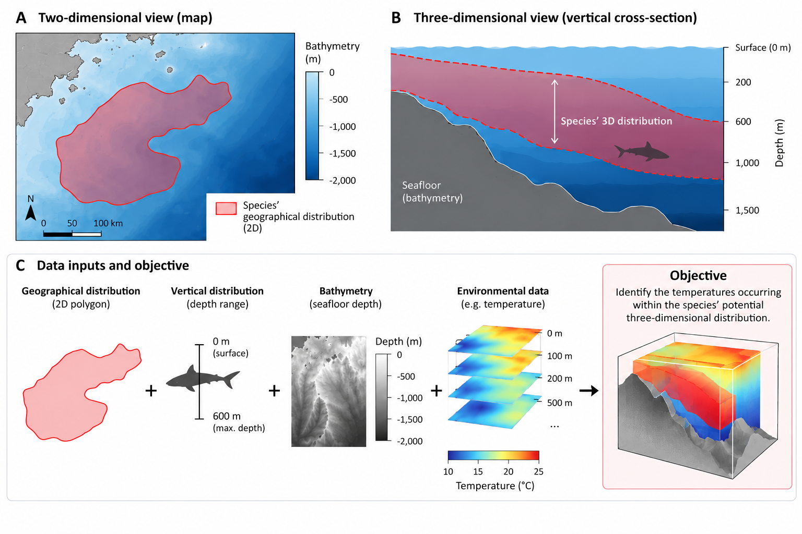
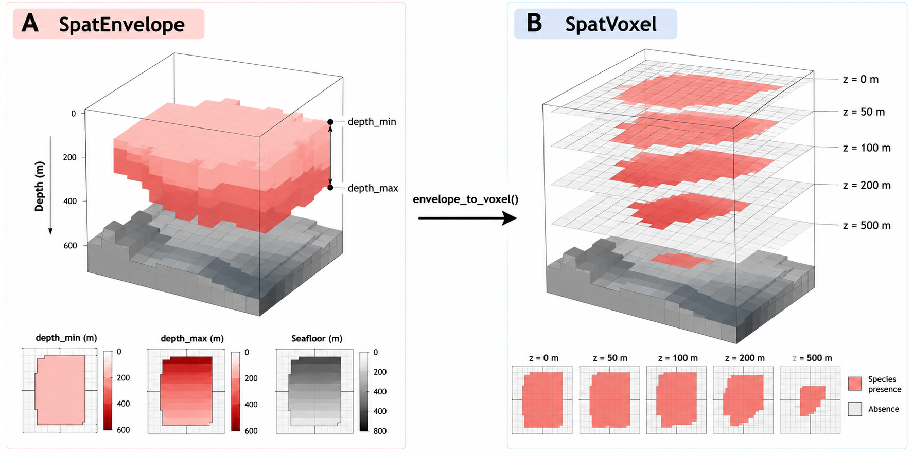

Project Spec
Source:SPEC.md
This document describes the design of ocean3d, an R package for analysing marine habitats in 3D: how species, human activities and environmental conditions overlap in space and depth.
The primary operation that ocean3d is focused on is the spatial querying of large 3D marine datasets. ocean3d enables asking questions like 1. What range of environmental conditions is a species found in? 2. How much does a given anthropogenic activity affect a species? 3. What impact could protective measures have on a species?
while considering three-dimensional space.

Figure 1. A species’ geographical range (A) and depth range, bounded by bathymetry, give its potential 3D distribution (B). Environmental data are then summarised within that space (C). From the Getting Started vignette.
Technically, this means that ocean3d needs to be able to take points (0D), lines (1D), polygons (2D) and 3D raster stacks and query how these intersect with one another.
Key design decisions
- Three steps: an analysis is build → intersect → summarise, and each analysis function belongs to one step (Package design). The extraction functions don’t follow this yet; they are planned to become wrappers over the three steps.
-
Now: two data models. netCDF files are used for point, buffer and track extraction;
SpatVoxel/SpatEnvelopefor everything else (Data model). - Planned (#99): one model with time as a dimension, reading only the data each step needs. A trial of the stars and ncdfCF packages decides how the data are read and held.
-
Planned: one vector class,
SpatVector3D, holding points, lines and polygons with depth. - Planned: CFtime for time decoding.
Package design: build, intersect, summarise
An analysis in ocean3d has three steps, and each analysis function belongs to one of them (downloads and cache utilities sit outside). The output of one step is the input to the next, and each step can be used on its own.
- Build: turn inputs (observations, tracks, polygons with depth ranges, rasters, netCDF data) into 3D objects.
- Intersect: find where 3D objects meet each other or the data: the space they share, whether they share any, or the data values inside a shape.
- Summarise: turn what intersect returns into results: volumes, overlap, and statistics per shape or group.
| Step | Question | Exists now | Planned |
|---|---|---|---|
| Build | What is the 3D shape or grid? |
as_voxel(), as_envelope(), vect_to_envelope(), envelope_to_voxel(), voxel_to_envelope(), occupied(), create_study_raster(), data loaders (woa_load_nc(), load_gebco_bathymetry(), gfw_effort_to_raster()) |
as_vector3d(), buffer_3d(), vector3d_to_envelope(), track sampling |
| Intersect | Where do they meet? |
intersect_3d(), intersects_3d(), mask()
|
the same functions for SpatVector3D; a coverage function that returns the data cells inside each shape with weights (working name coverage_3d()) |
| Summarise | How much, and what values? |
volume(), calc_volume_overlap()
|
summarise_3d() for statistics on intersect results |
The Getting Started vignette follows the three steps: it builds a species’ 3D range with vect_to_envelope(), keeps the temperatures inside it with mask(), and summarises them per depth with terra::global().
Rules:
- The functions for each step are exported, so users can stop after any step, inspect the result, or use their own shapes or statistics.
- Arguments with the same meaning have the same name and default in every step (#101). Input checks are shared (#104).
- New features go into one step, not into a function that combines steps. A new shape (e.g. an ellipsoid buffer) is a builder; a new statistic is an option of the summary function.
Combined functions. The extraction functions run the steps together in one call: they turn the input into a shape, find the data cells inside it and compute a statistic. The same work is written separately for points, buffers, tracks and areas, with different arguments for the same idea (#101, #104, #105); extract_to_buffer() alone has about 2100 lines and 36 arguments. They are planned to become wrappers over the three steps, keeping their current arguments and results:
| Function | Build | Intersect | Summarise |
|---|---|---|---|
extract_to_point() |
points, one per row | one cell per point | none (the value) |
extract_to_buffer() |
points, buffered into polygons (radius × depth window × time window) | cells and weights per polygon | per row |
extract_to_area() |
one polygon × depth band |
mask() or coverage |
optional |
extract_to_track() |
lines, sampled into points (optionally buffered) | as for points or polygons | per sample, then per track |
How the planned functions work is described in Extraction on the three steps.
Vector Representations in 3D space
For more background: https://en.wikipedia.org/wiki/Geometric_primitive
ocean3d plans one vector class for these, SpatVector3D, holding points, lines or polygons. See Vector class: SpatVector3D.
0D (Points / Vertices)
A point has no length, width or height, but has a position in 3D: three coordinates. In 3D graphics these are called vertices.
In ocean3d, a point has a lon (longitude), lat (latitude), depth (metres) and optional time, e.g. a tag detection at 35 m. These will be the points type of SpatVector3D.
1D (Lines / Edges)
A line connects two or more points; it has length but no width. In 3D graphics these are called edges.
In ocean3d, each vertex of a line has its own depth and time, so a line can follow a dive profile or a vessel route. These will be the lines type of SpatVector3D.
extract_to_track() already extracts environmental values along lines, such as tagging tracks or fishing vessel routes, by sampling points along each ordered track and extracting at them with extract_to_point() (#31). It takes an ordered table of vertices rather than a class.
2D (Polygons / Faces)
A polygon is a closed shape made of points connected in order on one plane; it has length and width. In 3D graphics these are called faces.
ocean3d doesn’t handle polygons whose vertices each have their own depth. Instead, a polygon has one depth range for the whole shape. For example, an IUCN Red List range is a 2D polygon with a separate depth range. This is often called 2.5D.
These will be the polygons type of SpatVector3D: a polygon with a top and bottom depth and optional time interval, e.g. a marine protected area (MPA) × 0–200 m. Buffering a point or line gives polygons.
3D (Volumes)
Volumes are closed geometries that are formed by multiple polygons.
Polygons in SpatVector3D enclose a volume: everything between their top and bottom. Tops and bottoms that vary across the polygon cover spheres, ellipsoids and layers that follow the seafloor. Full 3D volumes, with overhangs or several depth bands in one column, are out of scope. They may be needed later for 3D models from photogrammetry.
Raster Representations in 3D space
3D (Voxel)

Figure 2. The two raster representations of the same distribution. (A) A SpatEnvelope (min-max 2.5D) stores depth_min and depth_max per cell, bounded by the seafloor. (B) envelope_to_voxel() converts it to a SpatVoxel, one layer per standard depth. From the Getting Started vignette.
A 3D raster is a stack of 2D rasters, one per standard depth, as in Copernicus Marine and World Ocean Atlas (WOA) data. netCDF files store these stacks. In 3D graphics this is called a voxel model.
Multi-depth rasters used by ocean3d must encode depth in layer names using the format {variable}_depth={value} (e.g. t_an_depth=0, t_an_depth=100 for WOA annual mean temperature, t_an, at 0 and 100 m).
The depth range each layer covers depends on the source file. WOA, for instance, gives explicit depth bounds: the 0 m layer covers 0–2.5 m, the 5 m layer 2.5–7.5 m, the 10 m layer 7.5–12.5 m, and so on.
These rasters hold values across x, y and depth: e.g. temperature in °C, or a species’ probability of occurrence, at each coordinate and depth.
Data loaders convert other formats to this naming. depths() reads the depths from layer names, e.g. so extract_to_area() can select layers in a depth range.
3D (Min-max 2.5D)
Called 2.5D in GIS, as in digital elevation models, where each cell holds the land height.
A species range can be stored as a minimum-depth and a maximum-depth raster (Figure 2A). Maximum depth could be bound by the bathymetry raster, or by the maximum depth the species is found at.
This needs only two rasters (min and max) rather than one per standard depth. The downside is that a 2.5D envelope can’t represent gaps between its min and max depth.
Data model
Now: two models
ocean3d currently has two separate data models for the same kind of data (gridded marine variables by longitude, latitude and depth). Functions take one or the other, and no exported function converts one to the other.
“CF” below means the Climate and Forecast (CF) Conventions, the standard for metadata in netCDF files used by Copernicus Marine, WOA and many ocean models. CF attributes say how to read the stored numbers: time units and calendar (hours since 1950-01-01, noleap), depth units and direction (positive = "down"), cell edges (bounds), and which dimension is which (axis, standard_name). “CF-correct” means reading these as the conventions define them.
| netCDF model |
SpatVoxel model |
|
|---|---|---|
| Functions |
extract_to_point() and its extract2d() / extract3d_*() wrappers, extract_to_buffer(), extract_to_track()
|
extract_to_area(), volume(), calc_volume_overlap(), intersect_3d(), intersects_3d(), mask(), voxel profiles, as_voxel(), as_envelope(), woa_load_nc(), load_gebco_bathymetry(), gfw_effort_to_raster()
|
| Input | netCDF paths, connections or file tables |
SpatVoxel / SpatEnvelope, S4 classes extending terra::SpatRaster
|
| Reads with | ncdf4, only the cells each observation needs | terra |
| Depth | the netCDF depth coordinate: units converted to metres, positive direction, bounds |
layer names ({variable}_depth={value}), one set of depths for the whole grid |
| Time | CF time decoding (calendars, sub-daily steps, nearest or exact matching, series split across files) | none |
| Cell edges | CF bounds, or inferred from cell centres | terra’s regular grid extent and resolution |
The netCDF model keeps 4D data (lon, lat, depth, time) and its CF metadata intact and reads only the cells it needs. The voxel model gets terra’s raster operations (crop, mask, cell area, resampling), which the volume and overlap tools depend on. The cost of the split: a voxel from woa_load_nc() can’t be passed to extract_to_point(), a netCDF file can’t be passed to extract_to_area(), depth and grid handling is written twice with different rules, and the voxel tools have no time dimension.
Planned: one model (#99)
This section is the plan from #99. None of it is implemented yet, and the first step (the stars and ncdfCF trial below) may change it.
Requirements
- Time-aware 3D analysis. Time is a real dimension of the core object (the single object that will hold gridded data; see Direction). Volume, overlap and profiles work through time (for example seasonal habitat volume, or overlap by month), not only on a static voxel.
- Lazy reads for data larger than memory. Opening a dataset doesn’t read its values, every operation reads only the slices it needs, and heavy processing runs per time step or per chunk, so peak memory follows the size of one slice rather than the whole dataset.
- CF-correct metadata. Keep the current handling of time units and calendars, sub-daily steps, depth units and direction, bounds and longitude conventions (#71–#75, #88–#96).
None of the packages compared (terra, stars, ncdf4, ncdfCF) meets all three. terra stores depth and time as layer labels on a stack of 2D layers. stars has real dimensions and lazy stars_proxy objects, but only some operations stay lazy. ncdf4 reads exactly what is asked for but leaves everything above reading to the package. ncdfCF reads netCDF following CF (time, depth axes, bounds) and exports to terra, but it is marked experimental, and its docs don’t say whether its subsets are read lazily.
Direction: a hybrid
-
Core object: one object that describes the dimensions (lon/lat with cell edges, depth, time, coordinate reference system (CRS)) without loading values, in the style of stars. It may be a
stars_proxyitself if the trial supports that. -
Reads: lazy and exact, through stars proxies, or through the package’s own ncdf4 code where stars falls short. Remote Zarr stores (a cloud format Copernicus Marine also serves) would be read with
stars::read_mdim(). - Heavy spatial work: per time step or per chunk. Read one slice, process it with terra, and combine the results across time.
-
SpatVoxel/SpatEnvelope: become views of one time step of the core object, so the existing terra-based tools keep working on a slice. -
Time decoding: CFtime replaces the package’s own CF time decoder. It decodes CF time units and handles every CF calendar, including ones R’s date classes can’t represent (
noleap,360_day). It is already imported by ncmeta and tidync, which stars uses, so it fits whichever core object the trial picks. -
Extraction: point, buffer and track extraction keep reading only the cells they touch, and accept anything that can become the core object: a netCDF file, a
SpatVoxel, or a Zarr store.
First step: stars and ncdfCF trial
Before any code moves, compare stars and ncdfCF with the current ncdf4 code:
- On the synthetic netCDF fixtures from the tests and the #88–#96 cases: do decoded time, depth, bounds and values match the package’s results?
- On a large real file (for example a multi-year daily global Copernicus Marine product), measure peak memory and run time for opening as a proxy, point extraction across time, volume and overlap for one time step, and a polygon or buffer summary over a time window.
- Optionally, the same dataset as a remote Zarr store.
The result decides whether stars proxies become the core object, whether ncdfCF can take over CF reading (if it reads lazily and is stable enough to depend on), or whether the package keeps its own lazy reads.
Vector class: SpatVector3D
The raster side already has 3D classes built on terra::SpatRaster. The vector side gets one class that mirrors terra::SpatVector: one object holds features of a single geometry type, points, lines or polygons, reported by geomtype(). Each type has the depth and time that make sense for it:
| Type | Depth | Time | Example |
|---|---|---|---|
| points | one per vertex | one per vertex (optional) | a tag detection at 35 m |
| lines | one per vertex | one per vertex (optional) | a dive track, a vessel route |
| polygons | a top and a bottom per feature | an interval per feature (optional) | an MPA × 0–200 m, a 10 km buffer × 0–50 m |
Compared with the raster classes:
SpatVoxel |
SpatEnvelope |
SpatVector3D (planned) |
|
|---|---|---|---|
| Holds | values of a variable | a shape | shapes, one or more features with IDs |
| Horizontal | raster cells | raster cells (non-NA = footprint) |
points, lines or polygons |
| Depth | layer index, one set of depths for the grid |
[depth_min, depth_max] per cell |
per vertex (points, lines), or top and bottom (polygons) |
| Time | none | none | per vertex (points, lines), or an interval (polygons) |
Rules:
- Depth by type: points and lines have a depth at each vertex; polygons have a top and a bottom. A depth range (e.g. a buffer’s depth window) makes it a polygon.
-
Buffering points or lines gives polygons, as
sf::st_buffer()does in 2D, with a depth window and time window added. - Polygon scope: one depth interval per horizontal position (each vertical line enters the shape once and leaves once). This covers extruded shapes (cylinders, slabs, an MPA × a depth band), spheres, ellipsoids, cones, and shapes that follow the seafloor or mixed layer. Full 3D volumes (overhangs, several depth bands in one column) are out of scope.
-
Polygon surfaces:
topandbottomare each a constant (first version); later, a named shape with parameters (e.g. an ellipsoid buffer), a raster (e.g. relative to GEBCO bathymetry), or, as a fallback, a function of position. Every form reduces to “depth interval at these positions”, so adding a shape doesn’t change extraction code.top <= bottomeverywhere in the polygon. -
Volume is defined for polygons only.
volume()on points or lines is an error suggesting buffering, as area only makes sense for polygons in 2D. -
Conversion of polygons to a
SpatEnvelope(vector3d_to_envelope()) evaluates top and bottom at each cell of a template grid, likevect_to_envelope(). -
Storage: points and lines are stored as a vertex table (lon, lat, depth, time, feature ID, order), the format
extract_to_track()uses now, and convert to and from sf. sf isn’t the storage because it treats Z as height and most of its operations drop depth and time. How polygons are stored depends on the trial. -
SpatVolumeextends toc("SpatVoxel", "SpatEnvelope", "SpatVector3D"); its docs note that only polygons have volume.
Extraction on the three steps
The three steps are the package design (see Package design). This section plans the parts extraction still needs: SpatVector3D builders, a coverage function and summarise_3d(). Function names marked “planned” are working names, to be settled in the issue for each step.
1. Build. SpatVector3D builders create shapes without reading the data they will be compared with.
# points or lines: a depth (and time) at each vertex
detections <- as_vector3d(obs, depth = "depth", time = "datetime")
# polygons: a top and bottom (and time interval) per feature
mpa_band <- as_vector3d(mpa, top = 0, bottom = 200, time = c(t0, t1))
# buffering points or lines gives polygons
buffers <- buffer_3d(detections, radius_km = 10, depth_window = 25, time_window = 1)Names follow the existing converters: as_<class>() builds an object of that class (as_voxel(), as_envelope(), as_vector3d()), and <from>_to_<to>() converts between classes (voxel_to_envelope(), vector3d_to_envelope()). buffer_3d() uses the _3d suffix like intersect_3d().
- A
SpatVector3Dholds one or more features, each with an ID that the later steps keep. One row of an observation table becomes one point; a buffer around it becomes one polygon. - Sampling a track (vertices, even spacing, one sample per cell) is a build step: it turns lines into points, which can then be buffered. The check that each track segment stays in water belongs here too, so invalid samples are marked before anything is read.
- Converting between classes (
SpatVector3Dpolygons toSpatEnvelopeon a template grid, envelope to voxel) is also a build step.
2. Intersect. Intersection finds where shapes and data meet. In extraction, it is the only step that reads the source data, and it reads only the cells, depths and time steps the shapes touch.
- Shape with shape:
intersect_3d(),intersects_3d()andmask()keep their current meaning and gain methods forSpatVector3D. The result is a shape, not data values. - Source with shape: a new function (working name
coverage_3d(source, shapes)) returns a coverage table: one row per feature and source cell, with the cell’s value, its depth and time step, and its weight. The weight depends on the geometry type:- polygons: the polygon’s volume inside the cell (covered area × depth overlap) times the time overlap;
- lines: the length of line inside the cell, or the time spent in it;
- points: one cell per point with weight 1, picked by the existing nearest or exact matching rules for depth and time (
method,time_match). Those rules move here fromextract_to_point().
- Picking the source file for each shape (multi-file series, tiles) and the CF handling of time, depth and bounds live in this step, on the core object.
- Many features are read in blocks, so each block of the source is read once rather than once per shape.
3. Summarise. Summaries work on the coverage table only. They don’t read files or handle geometry, so they can be tested on small hand-written tables.
coverage <- coverage_3d(source, shapes)
summarise_3d(coverage, statistic = c("mean", "sd"), weighting = "weighted",
min_valid_fraction = 0.8, by = "id")- One set of statistic names for every shape type: mean, sd, min, max, median, and
most_similarwith a target column. Oneweightingargument:"weighted"uses the coverage weights,"equal"ignores them. -
bysets the grouping: per feature (one buffer), or across features (all samples along a track, weighted by distance or duration). This replaces the separate per-buffer and per-track summaries in the removedextract_to_buffered_track()(#105). -
volume()andcalc_volume_overlap()measure shapes rather than values, so they stay as they are; for polygons, the coverage weights sum to the volume.
Order of work
Each step has its own issue, and each PR branches off main:
- Document the current split: which functions take netCDF and which take
SpatVoxel(README function overview and each function’s@param) (#109). - Move the shared CF/netCDF helpers (time decoding, depth axis, bounds, dimension detection) out of
R/extract_to_points.Rinto their own files (#110). - Replace the internal CF time decoding with CFtime, with the time tests from #71–#75 and #88–#91 as reference behaviour (#111).
- Run the stars and ncdfCF trial and write up the results with a recommendation for the core object (#112).
- Agree on the core data model and update this section (#112).
- Build the core object and lazy reader, then time-aware volume, overlap and profiles, then
SpatVoxelas a time-step view (#113). - Add
SpatVector3Dwithgeomtype(),as_vector3d()and sf conversion: points and lines with per-vertex depth and time, and polygons with constant top and bottom and an optional time interval. Thenbuffer_3d()andvector3d_to_envelope()(#114). - Add the coverage function and
intersect_3d()/intersects_3d()/mask()/volume()methods forSpatVector3D(#115). - Add
summarise_3d(), then reimplement the extraction functions as build → intersect → summarise wrappers, one function per PR (#116). - Add track sampling as a build step and buffered tracks (#105); then named shapes, raster and function surfaces for polygons (#117). Block-wise reads for many features are part of #115.
The existing tests for both models, including the buffer and track tests, define the expected behaviour and must keep passing. New tests check that the same synthetic data gives the same values from a netCDF file, the core object and the matching SpatVoxel. API changes (what woa_load_nc() and the voxel constructors return, time in volume and overlap) need NEWS entries and should settle before the rOpenSci and CRAN submissions (#12).
ocean3d functionality
Grouped by the step each function belongs to (Package design).
Build: conversions between spatial representations
-
Create a study grid. A grid for the study area that other data are converted onto (
create_study_raster()). -
Convert 2D polygons with depth data to 2.5D. Combine a 2D polygon with a depth range, bounded by the seafloor (
vect_to_envelope()), e.g. IUCN Red List species ranges. -
Convert 2D rasters to 2.5D. Combine a 2D raster with a depth range (
as_envelope()), e.g. Global Fishing Watch fishing effort by gear type. -
Convert between 2.5D and 3D rasters.
envelope_to_voxel()places an envelope on a set of standard depths;voxel_to_envelope()keeps the shallowest and deepest level per cell where a test on the values holds (by default, notNA), filling any gaps in between. -
Build a
SpatVector3D(planned).as_vector3d()builds points or lines from a table or sf object with a depth (and time) per vertex, or polygons with a top and bottom (and time interval) per feature, without snapping them to a grid, e.g. tag detections at their depths, a dive track, or an MPA × a depth band. -
Buffer points and lines into polygons (planned).
buffer_3d()adds a horizontal radius, depth window and time window, e.g. a 10 km × ±25 m × ±1 day buffer around each tag detection. -
Convert
SpatVector3Dpolygons to 2.5D (planned).vector3d_to_envelope(x, template)evaluates the top and bottom at each cell of a template grid, likevect_to_envelope(). This loses the exact edges and the time interval, so use it only when the next step needs a grid (e.g. volume overlap with a species envelope).
Intersect: spatial query
Three functions handle pairs of 3D objects (SpatEnvelope, SpatVoxel, and (planned) SpatVector3D), or a 3D object with a 2D one (a SpatRaster footprint, or polygons). A 2D object restricts the shape horizontally and leaves its depths alone. - intersect_3d(x, y): the 3D space the two share. Two envelopes intersect their depth intervals; two voxels keep the levels both occupy; an envelope is placed on a voxel’s levels before the two are compared. The result is a shape, not data values. - intersects_3d(x, y): whether they share any 3D space, cell by cell, with terra’s three answers: TRUE, FALSE (both present but disjoint, or only one present), NA (neither present). - mask(x, mask): terra::mask() made depth-aware. Keeps x’s values where the mask reaches that cell at that depth. A voxel masked by an envelope puts the envelope on the voxel’s own levels, so the caller cannot misalign them.
SpatVector3D methods (planned): - Vector with vector: intersect_3d() intersects the geometries, the depths and the time intervals. Two polygons give a polygon (footprints intersected, depth intervals intersected at each position); a point or line with a polygon gives the points or parts of lines inside it. Features whose times don’t overlap don’t intersect. - Vector with envelope or voxel: polygons are evaluated on the raster’s grid (as in vector3d_to_envelope()) and compared cell by cell as two envelopes are now; points and lines are compared in the cells and levels they pass through. mask(voxel, x) keeps the voxel values in the cells and levels x reaches. - Vector with a data source: the coverage function, not these three, returns data values, with each cell’s partial coverage as a weight (see Summarise: extraction).
These functions are the intersect step of the package design.
terra::intersect() is a 2D test, so on a 3D object it is an error pointing to the functions above. The package’s methods name the concrete classes (SpatVoxel, SpatEnvelope). When a generic has both a SpatRaster method and a SpatVolume method, as terra’s generics do, S4 picks the SpatRaster one, so a method on the union would be skipped. The union works as a dispatch target only for generics without a SpatRaster method.
Summarise: extraction
The extract_to_*() functions below exist now and combine two or three steps; each is planned to become a wrapper over them. Volume extraction uses mask() from the intersect step, followed by a summary; see Package design. Items marked (planned) aren’t implemented yet.
-
Point extraction.
extract_to_point()extracts the nearest value from netCDF files (e.g. environmental data) to an input point based on its longitude, latitude, depth, and, when available, time. -
Buffer extraction.
extract_to_buffer()summarises netCDF values within a geodesic circle × depth window × time window around each observation, with cell coverage, layer thickness and time weighting, or picks the value closest to a target. -
Track extraction.
extract_to_track()samples points along ordered tracks (e.g. tagging data), extracts netCDF values at them, and can summarise per track. -
Area extraction.
extract_to_area()crops aSpatVoxel(e.g. environmental data) to an input polygon and depth band. -
Volume extraction.
mask(voxel, shape)keeps aSpatVoxel‘s values (e.g. environmental data) inside a 3D volume and sets the rest toNA. The volume is aSpatEnvelope(2.5D, e.g. a species range fromvect_to_envelope()bounded by the seafloor) or a presenceSpatVoxel(3D). With an envelope,boundssets whether a depth level counts when the envelope reaches its top or its midpoint. The Getting Started vignette uses this to get temperatures within a species’ 3D range. -
Extraction at a
SpatVector3D(planned). The coverage function (working namecoverage_3d()) returns the source cells each feature touches with their weights (one cell per point, length or time along lines, volume × time overlap in polygons), andsummarise_3d()turns them into statistics. Observations are points, tracks are lines, and buffers and areas are polygons, so this one path replaces the separate code in each function above.
Summarise: volume calculations
-
Calculate the volume occupied by 2.5D representation. Each rasterized range stores presence plus
depth_min/depth_maxper cell, clamped to the seafloor. Volume is the sum ofcell_area × (depth_max - depth_min)over present cells. The overlap between two shapes is the volume ofintersect_3d()’s result, measured the same way. -
Calculate the volume occupied by 3D representation. Each layer’s height is the distance to the next layer: with
t_an_depth=0andt_an_depth=100, the 0 m layer is 100 m tall. -
Calculate the volume of
SpatVector3Dpolygons (planned). Measured from the geometry, not a grid: polygon area × (bottom-top) for constant surfaces, exact formulas for named shapes (sphere, ellipsoid), and sampling across the polygon for raster or function surfaces. The time interval doesn’t change the volume. Points and lines have no volume, sovolume()on them is an error suggestingbuffer_3d().volume()andcalc_volume_overlap()gainSpatVector3Dmethods, with overlap measured onintersect_3d()’s result as for envelopes.
Utilities
- Download and prepare data. Utilities for public data: WOA, GEBCO bathymetry, IUCN Red List and Global Fishing Watch. Copernicus Marine utilities were removed in #53 and are planned to return with a shared cache (#55).
-
Cached downloads. WOA files are cached in one place (
woa_cache_dir()) that all projects read from, so code can be shared without the data. File names give the WOA edition and decade, but the package doesn’t yet record which files an analysis used. - The cache records what was downloaded (planned, #55). For every source, each cached file has a record of the dataset and its version (e.g. WOA23, GEBCO 2025, the Copernicus Marine product and dataset version), the URL it came from, the download date and a checksum. An analysis can then list the exact data it used, and the same versions can be downloaded again elsewhere.
Conventions
- Depth sign convention. Depths are positive metres increasing downward, but GEBCO bathymetry is negative below sea level. The voxel constructor flips it and clamps land to 0. Document which convention any new argument uses.
-
ncdf4vsterra. Point, buffer and track extraction read netCDF directly withncdf4, reading only the cells each observation needs. Large raster operations (1000s of cells), like extracting areas and volumes, useterra. This split is planned to become one model; see Data model. Until then, say in each function’s docs which input it takes. - Time. Times are decoded from CF units and calendars and matched to observations in UTC. Only the netCDF model has a time dimension for now. Decoding is planned to move to CFtime; see Data model.
Future directions
Ideas not yet started are tracked as GitHub issues, e.g. 3D species distribution modelling (#108).